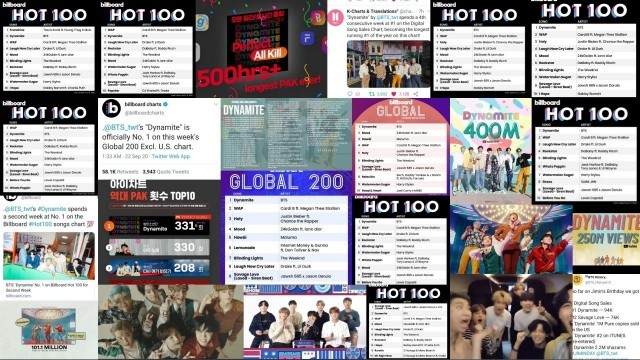

De una pequeña persona para grandes mentes: Las historias ocultas trás el exito.
La descripción de una gran banda.
Las populares siglas de la exitosa y popular banda BTS, son una abreviatura de "Bangtan Sonyeondan" en coreano, “Bulletproof Boy Scouts” en inglés y que traducido al español significa “Chicos a prueba de balas”, dicha banda proviene de Corea del Sur cuyos integrantes son Kim NamJoon, Kim SeokJin, Min YoonGi, Jung HoSeok, Park JiMin, Kim TaeHyung y Jeon JungKook.
Donde todo recién empezaba: Kim NamJoon.
Kim NamJoon, mejor conocido por su nombre artístico RM (anteriormente Rap Monster), nació 12 de Septiembre de 1994 en Ilsan, Gyeonggi-Do, Seúl, Corea del Sur. Es actualmente un rapero, bailarín, compositor, productor y modelo surcoreano.
El segundo chico en formar una gran banda: Min YoonGi
Min YoonGi, mejor conocido como Suga, su nombre artístico como miembro de BTS, o como Agust D, su nombre de solista, es un rapero, compositor, productor, modelo y bailarín surcoreano que nació el 9 de marzo de 1993 en Daegu, Corea del Sur.

Estructurando de a poco: Jung Hoseok
Jung HoSeok, mejor conocido por su nombre artístico "J-HOPE", es un bailarín, coreografó, rapero, cantante, compositor, modelo y productor surcoreano nacido el 18 de febrero de 1994 en Gwangju, Corea del Sur, antes de su debut con BTS, era un bailarín underground, y se presentaba bajo el nombre de Smile Hoya, nombre con el que ganó varios premios en competencias yfestivales de baile, además, perteneció a dos grupos de baile callejero, GO Arts y NEURON.